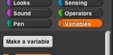
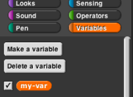

Sometimes it's not good enough to remember a value inside one script. Instead, you need the value available everywhere in your project. The classic example is the score in a video game; even when no script is running, the score should be remembered.
There was a time, in the early history of programming languages, when all variables were global. This led to a lot of bugs, because different parts of the program would use the same name for different purposes and erase each others' saved values. So don't use global variables as your first choice; think whether a script variable or a for block (which makes a variable local to just that block) would work instead.
To make a global variable, you must go to the Variables palette and click on the Make a variable button (not a block -- you can't put it into a script!):

You will be prompted to give your variable a name. After you do that, you'll see an orange variable oval in the Variables palette:

This can be dragged into scripts just like the orange variable ovals in the for block and the script variables block.
The checkbox to the left of the variable block determines whether or not the value of the variable is displayed on the stage. The variable watcher (which is what that display is called) can be useful for debugging, or can be displayed permanently so that the user of your project can see the score, or whatever you have in the variable. By right-clicking on the watcher, you can change the format in which it appears on the screen.
Try this: Experiment with using a slider watcher to change the value of a numeric variable.
When you make a global variable, you also get a "Delete a variable" button that can be used for the obvious purpose.☺